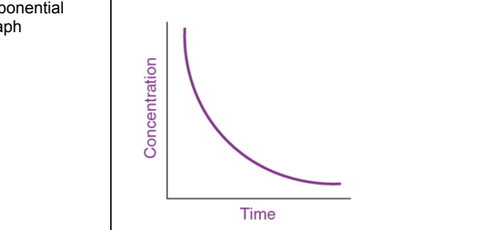
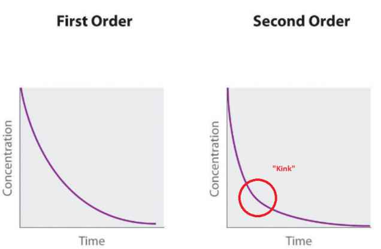
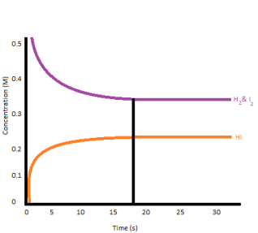
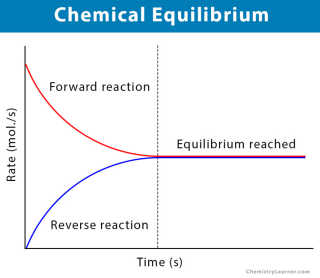

Cover & Legend
9th Apr, 2026
AP Chemistry Quick Review Notes
25-26
Man Kit Cheung
=Important = Super important
9th Apr, 2026
AP Chemistry Quick Review Notes
25-26
Man Kit Cheung
=Important = Super important
| Isotopes | Atoms of the same element with the same number of protons but different amount of neutrons |
|---|---|
| Average atomic mass | Weighted average of atomic masses of all naturally occurring isotopes, defined as 1/12 of the mass of carbon-12 element |
| Aufbau’s principle | Electrons are placed in orbitals, subshells, and shells at increasing order of energy |
| Pauli exclusion principle | No orbital can hold more than 2 electrons, and they must have opposite spins |
| Hund’s rule | Ground state is achieved by filling electrons in parallel spins before paring |
| Binding energy | Energy required to remove and electron from atom / ion |
| Ionization energy | Energy required to remove and electron from a GASEOUS atom / ion |
| Effective nuclear charge (Zeff) | Net positive charge in valence electron after accounting for inner electron shielding |
| Electron shielding | Reduction in attraction between nucleus and valence electron due to some inner electrons blocking nuclear charge |
| Electron affinity | Energy change when a GASEOUS atom gains an electron |
| Electronegativity | Ability of an atom in a bond to attract a shared electrons to itself |
| Electron shielding | Electrons that are between valence electrons and nucleus Valence electrons are less attracted to nucleus |
| Group | Period | |
|---|---|---|
| Electronegativity | Decrease down the group (increasing atomic size) | Increase across the period (increasing Zeff & decreasing radius) |
| Electron affinity | Decrease down the group (increasing atomic size) | Increase across the period (increasing Zeff & decreasing radius) |
| Ionization energy | Decrease down the group (increasing radius & shielding) | Increase across the period (increasing Zeff & decreasing radius) |
| 1st & 2nd Ionization energy | 1st ionization energy < 2nd ionization energy | 1st electron removed, decrease electron electron repulsion, remaining electrons move closer to nucleus |
| Atomic radius | Increase down the group (increasing energy level) Shielding effect does not contribute | Decrease across the period (increasing number of protons & Zeff) |
| Zeff | Decrease down the group / roughly constant (increasing nuclear charge & shielding effect) Stronger Coulombic Force = lower potential energy | Increase across the period (increasing number of protons & constant shielding effect) |
| Boron has lower IE than Beryllium (B has more proton than Be) | Be electron configuration : 1s^2 , 2s^2 B electron configuration : 1s^2 , 2s^2 , 2p^1 2p electron is more shielded and further away from nucleus, easier to remove |
|---|---|
| Oxygen has lower IE than Nitrogen (O has more proton than N) | N electron configuration : 1s^2 , 2s^2, 2p^3 O electron configuration : 1s^2 , 2s^2, 2p^4 N has more stable half filled 2p orbital, 2 pairs of electrons in O repel each other, easier to remove |
| Ionic bond | Electrostatic attraction between cations and anions |
|---|---|
| Covalent bond | Electrostatic attraction between negatively charged shared pair of electrons and positively charged nucleus |
| Metallic bond | electron static attraction between metal cations and sea of delocalized electrons |
| Nonpolar covalent bond | Electrons are shared equally |
| Polar covalent bond | Unequal sharing of electrons, causing partially negative and positive charge, create dipole moments |
| Bond length | Distance between 2 nuclei of bonded atoms, minimum potential energy |
| Bond energy | Energy required to break one mole of bond in GAS PHASE |
| Lattice energy | Energy released when GASEOUS IONS form one mole of ionic solid |
| Octet rule | Tendency of main group elements to form bonds until they have 8 valence electrons |
| Expanded octet | Atoms in period 3 or higher has more than 8 valence electrons |
| Incomplete octet | Atoms like B and Be are stable with fewer than 8 valence electrons |
| Resonance | When 2 or more valid Lewis structures differ in only placement of electrons, actual structure is a hybrid |
| Formal charge | Valence electron in free atom - nonbonding electron - 0.5 bonding electrons |
| Electron domain | Region of electron density around central atom (lone pair or bonding pair) |
| Electron domain geometry | Arrangement of electron domain (including bonding and lone pair) |
| Molecular | Arrangement of only the atoms (ignoring lone pair) |
| geometry | |
|---|---|
| Bond order | Number of bonds, its stability and strength |
| Shape | Bond Angle | Hybridization (central atom) | Example | Electron domain / Lone & Bond pairs |
|---|---|---|---|---|
| Linear | 180 | sp | CO2, HCN | 2 electron domain |
| Trigonal Planar | ~120 (lone pairs cause repulsion) | sp2 | BF3, SO3 | 3 electron domain |
| Bent (from trigonal planar) | <120 | sp2 | SO2, O3 | 2 bond pair 1 lone pair |
| Ideal Tetrahedral | 109.5 (no lone pair on central atom, symmetrical shape) | sp3 | CH4, CCl4 | 4 electron domains |
| Trigonal pyramidal | <109.5 | sp3 | NH3, PCl3 | 3 bond pairs 1 lone pair |
| Bent (from tetrahedral) | <109.5 | sp3 | H2O, H2S | 2 bond pairs 2 lone pairs |
| Ideal Trigonal bipyramidal | 90 and 120 (no lone pair on central atom, symmetrical shape) | sp3d | PCl5, AsCl5 | 5 electron domains |
| Seesaw | <90 & <120 | sp3d | SF4, | 4 bonding pair |
| (from trigonal bipyramidal) | XeO2F2 | 1 lone pair | ||
|---|---|---|---|---|
| T shaped (from trigonal bipyramidal) | <90 & <180 | sp3d | ClF3, BrF3 | 3 bonding pair 2 lone pair |
| Ideal Octahedral | 90 | sp3d2 | SF6 | 6 electron domains |
| Square pyramidal (from octahedral) | <90 | sp3d2 | BrF5, XeOF4 | 5 bonding pair 1 lone pair |
| Square planar (from octahedral) | <90 | sp3d2 | XeF4, PdCl4 | 4 bonding pair 2 lone pair |
| Characteristic | Reason | |
|---|---|---|
| Single bond | Weakest, longest | Fewest electron shared, internuclear distance greatest, weakest and longest bond |
| Double bond | Stronger, shorter | |
| Triple Bond | Strongest, Shortest | Highest bond order, creates high density electron cloud, strongly attracts nuclei |
| Properties | Reason | |
|---|---|---|
| Substitutional (Brass, Bronze) | Increased strength, corrosion resistance Retained malleability and ductility Lower melting point than pure metal | Difference sized atoms makes it harder for layers to slide past each other Sea of delocalized electrons remains intact, layers can still slide past each other under stress Difference sized atoms disrupts regular metallic crystal lattice, creates weak points and defects, reduced bonding strength, lower melting point |
| Interstitial (Steel, metal nitride) | Significantly increased strength Reduced malleability and ductility (more brittle, breaks when stretched) Higher melting point than pure metal | Small nonmetal atoms fill up gaps between large metal atoms. Restricts dislocation movement Disrupts regular structure, locking atomic layers in place Formation of metal-nonmetal bonds, stronger and harder to break |
| Malleability (by compression) | Ability to deform | Nondirectional metallic bonds, allow layers to slide past each other |
| Ductility (by stretching) | Ability to permanently deform | Delocalized, free flowing electrons allow adjustment of new positions for cations without breaking metallic bonds |
| London Dispersion Forces | Temporary dipoles caused by instantaneous uneven electron distribution Strength increase with size and surface area Strength increase with polarizability & number of electrons In isomers, more branched molecule = less polarizable = smaller LDF = decrease boiling / melting point |
|---|---|
| Dipole Dipole forces | Attraction between molecules with permanent dipole interactions Increase with electronegativity difference |
| Dipole induced dipole interaction | Interaction between polar molecule and nonpolar molecule Polar molecule cause temporary dipole in nonpolar molecule, distorting nonpolar molecule’s electron distribution |
| Hydrogen bonding | Strong dipole dipole force when H is bonded with O, N, F Increasing strength of hydrogen bond: H–N < H–O < H–F |
| Ion dipole force | Strongest intermolecular force Attraction between ion and the partial charge on polar molecule Increase with ionic charge & magnitude of dipole moment |
| Van der waal’s force | Collective term for london dispersion forces and dipole dipole forces, excluding hydrogen bonds |
| Cohesion | Tendency of water molecules to stick together due to hydrogen bondings |
| Adhesion | Tendency of water molecules attracted to surfaces of another substances |
| Surface tension | Force caused by inward cohesive attraction of water molecules, minimize surface area |
| Driven by intermolecular forces of liquid | |
| Capillary action | Ability for water to flow through narrow tubes against gravity Driven by cohesion and adhesion |
| Triple point (phase diagram) | A point where solid, liquid gas coexist |
| Critical point | End point of liquid-gas equilibrium curve liquid and gas become indistinguishable |
| Photon | Particle of light with energy |
| Wavelength (λ) | Distance between wave peaks |
| Frequency (v) | Waves per second Inversely proportional to wavelength |
| Beer-Lambert Law | Absorption of light is directly proportional to the molar absorptivity |
| Vapour pressure of liquid | Pressure exerted by vapor when liquid and vapor are in dynamic equilibrium |
| Dynamic equilibrium | Rate of evaporation = rate of condensation |
| Boiling point | Vapor pressure of liquid = atmospheric pressure (except for closed container) |
| Normal boiling point | Boiling point at 1 atm |
| Crystalline solid | Atoms are arranged in orderly repeating pattern, such that net attractive IMF are at maximum |
| Amorphous solid | Disordered structure, lacks well defined arrangement |
| Molar volume | Volume of one mole of substance under standard condition |
| Mobile phase | Solvent / liquid (in beaker) that carries sample mixture along stationary phase |
|---|---|
| Stationary Phase | Solid (paper / silica gel) |
| Trend | Reason | |
|---|---|---|
| Vapor pressure | Increase with temperature Decrease with increasing IMF High vapor pressure = low boiling point | Higher KE, greater collision Greater IMF = greater attraction = more energy required to break Strong IMF have low vapor pressure |
| Non-polar mobile phase | More nonpolar the sample = further the distance it travels away from origin | Nonpolar solvent interact strongly with nonpolar nonpolar substances compared to polar ones |
| Silica Gel for stationary phase | Distance of polar substances traveled decrease | Silica Gel is highly polar Forms stronger attraction with more polar substances Substances more attracted to stationary phase, substance tends to retain |
| Assumption | 1. Gas molecules have no volume (separated too far apart) 2. No interactions between molecules 3. Average KE is proportional to Temperature (K) |
|---|---|
| Statement | Temp increase = molecules have greater collision with wall of container = greater pressure |
| Equivalence point | Moles of acid and base match stoichiometrically |
|---|---|
| End point | Color change |
| Synthesis | A+B → AB |
|---|---|
| Decomposition | AB → A + B |
| Single replacement | A + BC → AC + B |
| Double replacement (metathesis) | AB + CD → AD + CB |
| Combustion | Hydrocarbon + O2 → CO2 + H2O |
| Strong acid / base | Give weak conjugate base / conjugate acid Anion / cation is the conjugate base / conjugate acid |
|---|---|
| Weak acid / base | Give strong conjugate base / conjugate acid |
| Conjugate base | Acts as Bonsted-Lowry base, but it is not |
| Conjugate acid | Acts as Bronsted-Lowry acid, but it is not |
| Characteristic | Proton transfer, no electron transfer |
| Oxidized | Increase oxidation number, loose electrons |
|---|---|
| Reduced | Decrease oxidation number, gains electrons |
| Zero order | Change in concentration of compound has NO effect on rate |
|---|---|
| First order | Concentration x 2 = rate x 2 |
| Second order | concentration x2 = rate x 4 |
| Formula | [A]t = -kt + [A]0 |
|---|---|
| Slope | -k |
| Graph | Linear [A] against t |
| Formula | ln[A]t = -kt + ln[A]0 |
|---|---|
| Slope | -k |
| Linear graph | Linear ln[A] against t |
| exponential graph | Nonlinear [A] against t (less steep)  |
| Formula | 1/[A]t = kt + 1/[A]0 |
|---|---|
| Slope | k |
| Linear graph | Linear 1/[A] against t |
| Exponential graph | (more steep)  |
| Definition | High enough energy to overcome activation energy + correct orientation |
|---|
| Effects by temperature | Increase temperature = increase avg. KE = peak shift to right = curve flattens(particles spread over wider range of speed) Gives higher fraction of molecules that has energy equal / over activation energy, overcoming it |
|---|---|
| Effects by molar mass | Increase molar mass = move slower = curve is tall and narrow = peak toward left |
| Rate determining step | Slowest step, products cannot be formed until slow step is completed Rate law ONLY list out reactants in rate determining step |
|---|---|
| intermediates | Produced then consumed |
| Catalysts | Consumed early, regenerated later |
| Standard Enthalpy of Formation | Enthalpy change for making 1 mole of compound from its elements at standard states |
|---|---|
| Specific heat capacity | Energy required to raise 1kg / 1g of substance by 1 degree celsius |
| During Phase change | Horizontal line - Energy used to overcome / form intermolecular forces |
|---|---|
| Not during Phase Change | Sloped line - Energy used to increase KE & temperature of substance |
| Specific Heat | Higher specific heat = smaller temperature change More energy needed to increase 1kg of substance by 1 degree celsius |
|---|---|
| Mass | More mass = more what required |
| Equilibrium Concentration |  |
|---|---|
| Equilibrium Pressure |  |
| Equilibrium Rate |  |
| Dynamic Equilibrium | Equilibrium = Rate of forward & reverse reactions are equal, no net change in concentration of reactants and products Dynamic = Reactions still continue to occur at molecular level, reactants constantly forming products, vice versa |
|---|
| Statement | When stress is applied to the reactant, system shift in response to counteract the change |
|---|---|
| Concentration | Reactant increase = shift the product Product increase = shift to reactant |
| Pressure | Pressure increase (decrease volume) = shift to side with less moles of gas Pressure decrease (increase volume) = shift ot side with more moles of gas |
| Adding inert gas | Non-rigid container = no change in pressure, volume increase = shift to side with more moles of gas Rigid container (fixed volume) = increase pressure, no change in partial pressure = no shift in equilibrium |
| Temperature | Increase temperature = shift to endothermic direction Decrease in temperature = shift to exothermic direction |
| IMPORTANT | THESE DO NOT CHANGE THE EQUILIBRIUM CONSTANT (K) VALUE Only TEMPERATURE can affect K value |
| Formula | Kp = Kc(RT)^(∆n ∆n = moles of gas products - moles of gas reactants |
|---|
| Bronsted-Lowry Acid | Strong Acid Weak Acid Conjugate acid (acts as a bronsted-lowry acid) |
|---|---|
| Bronsted-Lowry Base | Strong Base Weak Base Conjugate Base (acts as a bronsted lowry base) |
| Bond strength | Bond Strength increase = acid strength decrease |
|---|---|
| Oxoacids | Increase oxygen atom number = withdraw more electron density from central atom (oxygen is highly electronegative) = weakening O-H bond = stronger acid |
| Electronegativity | Increase electronegativity of central atom = increase stability = increase acid strength |
| Function | Resists pH change when small amount of acid / base is added to the solution |
|---|---|
| characteristics | Must contain the following: - Weak Acid / Weak Base - Its conjugate base / its conjugate acid |
| Relationship and trends | 1. Concentration dependent - Increase buffer capacity - Buffer pH remains constant (ratio of [A-]/[HA] is unchanged) |
| Meaning of entropy | Entropy increases as energy and matter can be distributed in more microscopic arrangements. A gas generally has higher molar entropy than the same substance as a liquid or a solid. |
|---|---|
| Predict the sign | Melting, vaporization, and spreading out a gas usually increase entropy. In a reaction, increasing the total moles of gas is a useful clue that ΔS is positive. |
| Standard molar entropy | S° is the entropy of one mole of a substance under standard conditions. Elements in their standard states generally have nonzero S° at room temperature. |
|---|---|
| Formula | ΔS°rxn = ΣνS°(products) − ΣνS°(reactants). Multiply each value by its coefficient in the balanced equation. The usual units are J/(mol·K). |
| Formula | ΔG = ΔH − TΔS at constant temperature and pressure. Use kelvin and match the energy units of ΔH and TΔS. |
|---|---|
| Sign of ΔG | Negative: forward reaction is thermodynamically favored. Positive: reverse reaction is favored. Zero: the system is at equilibrium. |
| Temperature | ΔH < 0 and ΔS > 0: favorable at all temperatures. ΔH > 0 and ΔS < 0: unfavorable at all temperatures. If both are positive, higher temperature favors the forward reaction. If both are negative, lower temperature favors it. |
| Thermodynamic control | ΔG describes the direction favored by the current conditions. It gives no rate information. A favorable reaction may proceed too slowly to observe. |
|---|---|
| Kinetic control | Rate depends on the pathway and activation barrier. A catalyst lowers the barrier for both directions, helping the system reach equilibrium faster without changing ΔG° or K. |
| Standard conditions | ΔG° = −RT ln K. K > 1 gives negative ΔG°. K < 1 gives positive ΔG°. Use R = 8.314 J/(mol·K) when ΔG° is in joules per mole. |
|---|---|
| Current conditions | ΔG = ΔG° + RT ln Q. If Q < K, ΔG < 0 and the forward direction is favored. At Q = K, ΔG = 0. If Q > K, the reverse direction is favored. |
| Enthalpy | Separating solute particles and rearranging solvent particles costs energy. Forming solute–solvent attractions releases energy. The balance can make dissolution endothermic or exothermic. |
|---|---|
| Entropy | Dispersing solute can increase entropy. If solvent molecules become more organized around dissolved particles, the entropy gain can shrink or become a loss. |
| Overall favorability | Use ΔG = ΔH − TΔS. Absorbing heat does not by itself prevent dissolution. A sufficiently favorable entropy change can offset an unfavorable enthalpy change. |
| Add the reactions | A favorable process can drive an unfavorable one if their combined ΔG is negative and the processes are linked. Cancel intermediates when adding the equations. |
|---|---|
| Scaling free energy | Reverse a reaction to reverse the sign of its ΔG. Multiply a reaction by a coefficient to multiply its ΔG by the same factor. |
| Electrodes | Oxidation occurs at the anode and reduction at the cathode in both types. Electrons pass through the external circuit from the anode toward the cathode. |
|---|---|
| Galvanic cell | A favorable redox reaction produces electrical energy. The anode is negative and the cathode is positive. A salt bridge maintains charge balance as ions move between half-cells. |
| Electrolytic cell | A power supply drives an otherwise unfavorable redox reaction. The anode is positive and the cathode is negative. Metal cations can be reduced and deposited at the cathode. |
| Standard voltage | E°cell = E°red,cathode − E°red,anode. Balance the electron transfer, but do not multiply electrode potentials by the balancing coefficients. |
|---|---|
| Free energy | ΔG° = −nFE°cell, where n is the moles of electrons transferred per mole of reaction and F ≈ 96,485 C/mol e⁻. Positive E°cell corresponds to negative ΔG°. |
| Nernst equation | E = E° − (RT/nF) ln Q. At Q = 1, E = E°. As Q increases, the forward cell voltage decreases. At Q = K, E = 0. |
|---|---|
| Concentration cells | The electrodes can be made of the same material. A difference in ion concentration produces a voltage. For a metal/metal-ion cell, reduction consumes ions on the more concentrated side, while oxidation adds ions on the more dilute side. |
| Charge and current | q = It. Use amperes (C/s) and seconds. Moles of electrons = q/F. |
|---|---|
| Deposited mass | Use the balanced half-reaction to convert moles of electrons to moles of metal; multiply by molar mass. For Cu²⁺ + 2e⁻ → Cu, one mole of copper needs two moles of electrons. |
| Example | A 2.00 A current for 965 s supplies 1,930 C, or about 0.0200 mol e⁻. With Cu²⁺ and complete current efficiency, that deposits 0.0100 mol Cu (about 0.635 g). |